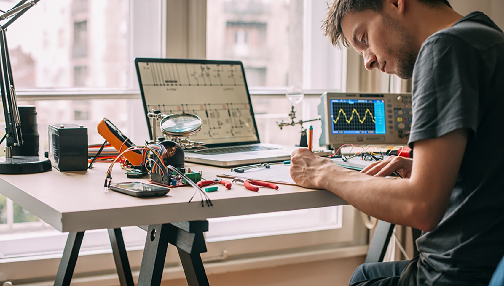

<!DOCTYPE html>
<html class="electricalPage"></html>
<html lang="en">
  <head>
    <meta charset="UTF-8" />
    <meta http-equiv="X-UA-Compatible" content="IE=edge" />
    <meta name="viewport" content="width=device-width, initial-scale=1.0" />
    <title>Engineering Degrees</title>
    <link rel="stylesheet" href="../styles.css" />
    <link rel="preconnect" href="https://fonts.googleapis.com" />
    <link rel="preconnect" href="https://fonts.gstatic.com" crossorigin />
    <link
      href="https://fonts.googleapis.com/css2?family=Jost:wght@500&display=swap"
      rel="stylesheet"
    />
    <link href="https://fonts.googleapis.com/css2?family=Open+Sans&display=swap" rel="stylesheet">
  </head>

  <body>
    <div class = "container3">
      <div class = "headerTrapezoid" id = "electricalBanner"> 
        <div class = "bigtext" id = pageTitle> ELECTRICAL ENGINEERING </div>
      </div>
    </div>
    <div class="container1">
      <div id="trapezoid1" class = "bigtext">
        <div class="header">
          <a href = "../index.html" class = "link1" id = "title"> ENGINEERING DEGREES </a>
          <div id="headerRight">
            <a href="../intro.html" class="link1"> Introduction</a> |
            <a href="compare.html" class="link1"> Compare</a> |
            <a href="about.html" class="link1"> Help & About</a> |
          </div>
        </div>
      </div>
    </div>

    <div class = "content"> 
      
      <div class = overlapBox> 
        <div class = "accordion"> 
          <button type = "button" class = "menuButton menuTop">Introduction</button>
          <div class="paragraphText menuContent ">
            <div class = "headerText bigHeader individualHeaderTop"> What is Electrical Engineering? </div>
            <div class = jobContent> If you’re interested in designing electronics or creating electrical systems, you should consider Electrical engineering. It is the study of engineering dealing with the design, iterative development and manufacture of any electronics and electrical equipment. They work on engineering power systems, designing radar systems, designing circuit boards for almost everything around you and so much more. </div>
          </div>
        </div>
        <div class = "accordion"> 
          <button type = "button" class = "menuButton">Statistics</button>
          <div class="paragraphText menuContent countryWrapper">
            <div id = electrical> United Kingdom </div> 
          </div>
        </div>
        <div class = "accordion"> 
          <button type = "button" class = "menuButton">Job Opportunities 
          </button>
          <div class="paragraphText menuContent ">
            <div class = "subHeader"> Electronics Engineer  </div>
              <div class = "jobContent" > Most graduates either become an electrical or electronics engineer. They mainly design electronic circuits to meet specific requirements. In the circuit, they integrate all sorts of electronic devices such as semiconductors, microprocessors, and microcontrollers.  </div>   
            <div class = mainLine> </div>
            <div class = "subHeader"> Electronics and Communications Engineer </div>
              <div class = "jobContent" > Communications engineer are mainly responsible for designing and modifying communication systems such as radio systems, telephone systems and of course the internet.    </div>   
            <div class = mainLine> </div>
            <div class = "subHeader"> Power Systems Engineer </div>
              <div class = "jobContent" >Power systems engineers are responsible for designing the electrical transmission systems that transfer energy from energy sources to power grids. Additionally, they may also evaluate transmission feasibility and overall system impact of the power system.   </div>   
            <div class = mainLine> </div>
            <div class = "subHeader"> Network Engineer </div>
              <div class = "jobContent" > Network Engineers’ main objective is to ensure the networks of a firm are running smoothly. They establish network topologies to improve network efficiency, monitor network traffic for packet losses (data loss), then troubleshoot the problem with a devised plan. Many also configure both the hardware and software of the organization which includes servers, switches, routers, and other hardware.  </div> 
          </div>
        </div>
        <div class = "accordion"> 
          <button type = "button" class = "menuButton">General Teaching Area </button>
          <div class="paragraphText menuContent subHeader">
            Mathematics<br> Circuits<br> Computer Architecture<br> Programming<br> Electronics Design<br> Signal and Systems<br> Electromagnetism<br> Power Systems<br> Communications  

          </div>
        </div>
        <div class = "accordion"> 
          <button type = "button" class = "menuButton">Interest
          </button>
          <div class=" menuContent ">
            <iframe class = "youtube" src="https://www.youtube.com/embed/rS9CbsohFGk"> </iframe>
              <div class = "paragraphText ytCaption"> Various Applications of Rasberry Pi (Microcomputer)</div>
            <iframe class = "youtube" src="https://www.youtube.com/embed/3S4cNfl0YF0"> </iframe>
              <div class = "paragraphText ytCaption"> An introduction to electrical engienering by MIT Professor</div>
            <iframe class = "youtube" src="https://www.youtube.com/embed/nL34zDTPkcs"> </iframe>
              <div class = "paragraphText ytCaption"> How to get started by Arduino (Microcontroller)</div>
          </div>
        </div>
    </div> 
      </div>


    <div class="container2">
      <div id="trapezoid2">
        <div class="header">
          <div class = "bigtext" id = footerLeft>  </div>
          <div class="bigtext" id="footerRight">
          </div>
        </div>
      </div>
    </div>
  </body>
  <script src = "../script.js"> </script>
</html>
